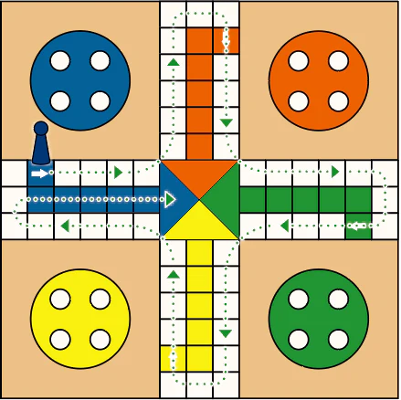
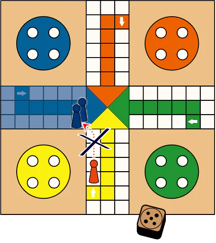
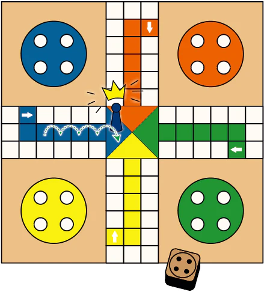

Ludo is a classic board game that has captured the hearts of players for centuries. Originally from India, dating back to 3300 BC, Ludo is a game that’s easy to learn and fun for all ages. Its widespread appeal has inspired similar games like Parcheesi and Sorry, but Ludo itself remains a beloved pastime. Here’s how to play this timeless game.
A Ludo board is square-shaped, featuring four brightly colored bases—red, blue, green, and yellow—in each corner. Each base is connected to a path that circles the board, leading to a home column and finally to a central home triangle.
Each player starts with four tokens that match their chosen color. The game also includes a die, which dictates how far your tokens will move on each turn.
The goal of Ludo is simple: be the first player to move all four of your tokens from your base, around the board, up your home column, and into the home triangle at the center.
Ludo is designed for 2 to 4 players. To begin, each player places their four tokens in their designated base. Players take turns rolling the die, with the highest roll determining who goes first. Play then proceeds in a clockwise direction.
To start moving a token from your base onto the board, you must roll a six. This token is then placed on the start position, and you can begin moving it around the board based on your subsequent rolls.
Once a token has circled the board and reached the home column of its color, it begins its final journey toward the home triangle in the center. You must roll the exact number needed to move your token into the home triangle.
The first player to successfully move all four of their tokens into the home triangle wins the game. The other players can continue to determine the remaining positions.
